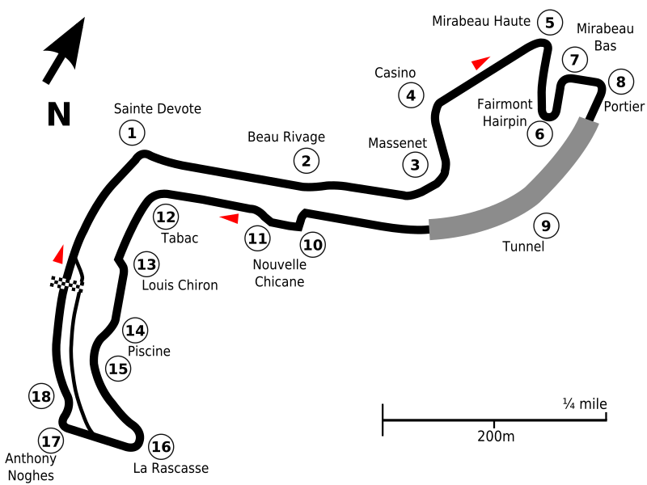

Cómo es el circuito

Cómo llegar
Tren de Niza a Mónaco
Servicios ferroviarios operados por la SNCF desde Niza hasta la estación de Mónaco-Monte Carlo.
- Ruta y duración del trayecto
- El viaje de Niza a Mónaco dura aproximadamente 20-30 minutos.
- Comodidad
- La estación de tren de Mónaco-Montecarlo está situada en el centro, a un corto paseo del circuito de carreras. Los trenes son frecuentes, fiables y evitan la congestión de tráfico por carretera, típica durante el fin de semana del Gran Premio.
- Frecuencia y costes
- Durante el fin de semana de la F1, los trenes desde Niza saldrán aproximadamente cada 15 minutos. Los billetes anticipados cuestan unos 5 EUR.
- Consejos
- Compra los billetes de tren con antelación para evitar las largas colas del día de la carrera. Opta por una salida temprana para asegurarte un viaje tranquilo, ya que los trenes pueden ir abarrotados.
Autobús de Niza a Mónaco
Los autobuses son otra opción viable para llegar a Mónaco, ya que ofrecen un viaje panorámico y económico.
- Ruta y duración del trayecto
- Los autobuses Lignes d'Azur, en particular el número 100, van de Niza a Mónaco con un tiempo de viaje de entre 50 minutos y 1 hora.
- Comodidad
- Los autobuses ofrecen una ruta directa a lo largo de las hermosas carreteras costeras, proporcionando a los pasajeros pintorescas vistas de la Riviera francesa.
- Costes
- Los billetes de ida cuestan alrededor de 3-4 EUR.
- Consejos
- Llega temprano a la parada del autobús para asegurarte un asiento. Los autobuses pueden estar abarrotados, especialmente los días de carrera, por lo que es mejor planearlo con antelación. Comprueba los horarios para ver si hay cambios durante el fin de semana del evento.
En coche desde Niza
- Ir en coche al Gran Premio de Mónaco puede ser una opción práctica, ya que ofrece flexibilidad y comodidad. Sin embargo, también plantea dificultades, sobre todo si se tiene en cuenta el intenso tráfico y las limitaciones de aparcamiento durante el evento. Aquí tienes una guía completa que te ayudará a planificar tu viaje:
- Puedes llegar a Montecarlo por la autopista A8. El trayecto desde Niza suele durar entre 40 y 50 minutos. Toma la salida 56-Mónaco y sigue las indicaciones hacia Montecarlo. Ten en cuenta que durante el fin de semana de la carrera se producirán numerosos cierres inesperados de carreteras y desvíos en los alrededores.